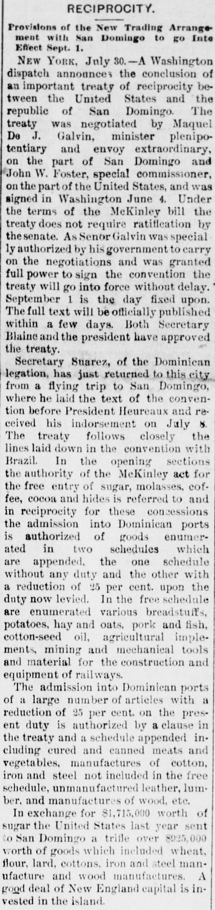
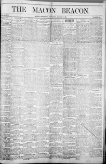

In the opening sections the authority of the McKinley act for the free entry of sugarEn las secciones iniciales, la autoridad de la ley McKinley para la entrada libre de azúcar, melaza, café, cacao y cueros
Macon Beacon. Macon, Miss., August 8, 1891. Page 1. View the originalVer el original


See the full pageVer la página completaThe Macon Beacon reported the conclusion of a commercial reciprocity treaty between the United States and the Dominican Republic endorsed by President Ulises Heureaux. The treaty granted free entry into Dominican ports for American agricultural and railway equipment and reduced duties by 25 percent on meats, textiles, and iron products. In return, Dominican staples including sugar, molasses, and coffee entered the United States duty-free under the McKinley Tariff Act.El Macon Beacon informó sobre la conclusión de un tratado de reciprocidad comercial entre Estados Unidos y la República Dominicana respaldado por el presidente Ulises Heureaux. El tratado otorgaba libre entrada a los puertos dominicanos al equipo agrícola y ferroviario estadounidense y reducía los aranceles en un 25 por ciento para carnes, textiles y productos de hierro. A cambio, los productos básicos dominicanos, incluidos el azúcar, la melaza y el café, entraban a Estados Unidos libres de impuestos al amparo de la Ley Arancelaria McKinley.
FULL TEXT:TEXTO COMPLETO:
RECIPROCITY.RECIPROCIDAD.
Provisions of the New Trading Arrangement with San Domingo to go into Effect Sept. 1.Disposiciones del nuevo arreglo comercial con Santo Domingo a entrar en efecto el 1 de septiembre.
NEW YORK, July 30.—A Washington dispatch announces the conclusion of an important treaty of reciprocity between the United States and the republic of San Domingo. The treaty was negotiated by Maquel De J. Galvin, minister plenipotentiary and envoy extraordinary, on the part of San Domingo and John W. Foster, special commissioner, on the part of the United States, and was signed in Washington June 4. Under the terms of the McKinley bill the treaty does not require ratification by the senate. As Senor Galvin was special ly authorized by his government to carry on the negotiations and was granted full power to sign the convention the treaty will go into force without delay. September 1 is the day fixed upon. The full text will be officially published within a few days. Both Secretary Blaine and the president have approved the treaty.NUEVA YORK, 30 de julio.—Un despacho de Washington anuncia la conclusión de un importante tratado de reciprocidad entre los Estados Unidos y la república de Santo Domingo. El tratado fue negociado por Maquel De J. Galvin, ministro plenipotenciario y enviado extraordinario, por parte de Santo Domingo y John W. Foster, comisionado especial, por parte de los Estados Unidos, y fue firmado en Washington el 4 de junio. Bajo los términos del proyecto McKinley el tratado no requiere ratificación por el senado. Como el Señor Galvin fue especialmente autorizado por su gobierno para llevar a cabo las negociaciones y se le otorgó pleno poder para firmar la convención el tratado entrará en vigor sin demora. El 1 de septiembre es el día fijado. El texto completo será oficialmente publicado dentro de unos pocos días. Tanto el Secretario Blaine como el presidente han aprobado el tratado.
Secretary Suarez, of the Dominican legation, has just returned to this city from a flying trip to San Domingo, where he laid the text of the convention before President Heureaux and received his indorsement on July 8. The treaty follows closely the lines laid down in the convention with Brazil. In the opening sections the authority of the McKinley act for the free entry of sugar, molasses, coffee, cocoa and hides is referred to and in reciprocity for these concessions the admission into Dominican ports is authorized of goods enumerated in two schedules which are appended, the one schedule without any duty and the other with a reduction of 25 per cent. upon the duty now levied. In the free schedule are enumerated various breadstuffs, potatoes, hay and oats, pork and fish, cotton-seed oil, agricultural implements, mining and mechanical tools and material for the construction and equipment of railways.El Secretario Suarez, de la legación dominicana, acaba de regresar a esta ciudad de un viaje rápido a Santo Domingo, donde presentó el texto de la convención ante el presidente Heureaux y recibió su endoso el 8 de julio. El tratado sigue de cerca las líneas trazadas en la convención con Brasil. En las secciones iniciales se refiere la autoridad de la ley McKinley para la entrada libre de azúcar, melaza, café, cacao y cueros y en reciprocidad por estas concesiones se autoriza la admisión en puertos dominicanos de mercancías enumeradas en dos listas que se adjuntan, una lista sin derecho alguno y la otra con una reducción del 25 por ciento sobre el derecho ahora recaudado. En la lista libre se enumeran varios productos de pan, papas, heno y avena, cerdo y pescado, aceite de semilla de algodón, implementos agrícolas, herramientas mineras y mecánicas y material para la construcción y equipamiento de ferrocarriles.
The admission into Dominican ports of a large number of articles with a reduction of 25 per cent. on the present duty is authorized by a clause in the treaty and a schedule appended including cured and canned meats and vegetables, manufactures of cotton, iron and steel not included in the free schedule, unmanufactured leather, lumber, and manufactures of wood, etc.La admisión en puertos dominicanos de un gran número de artículos con una reducción del 25 por ciento sobre el derecho presente es autorizada por una cláusula en el tratado y una lista adjunta incluyendo carnes y vegetales curados y enlatados, manufacturas de algodón, hierro y acero no incluidas en la lista libre, cuero sin manufacturar, madera, y manufacturas de madera, etc.
In exchange for $1,715,000 worth of sugar the United States last year sent to San Domingo a trifle over $925,000 worth of goods which included wheat, flour, lard, cottons, iron and steel manufacture and wood manufactures. A good deal of New England capital is invested in the island.A cambio de $1,715,000 en azúcar los Estados Unidos el año pasado enviaron a Santo Domingo un poco más de $925,000 en mercancías que incluían trigo, harina, manteca, algodones, manufactura de hierro y acero y manufacturas de madera. Bastante capital de Nueva Inglaterra está invertido en la isla.